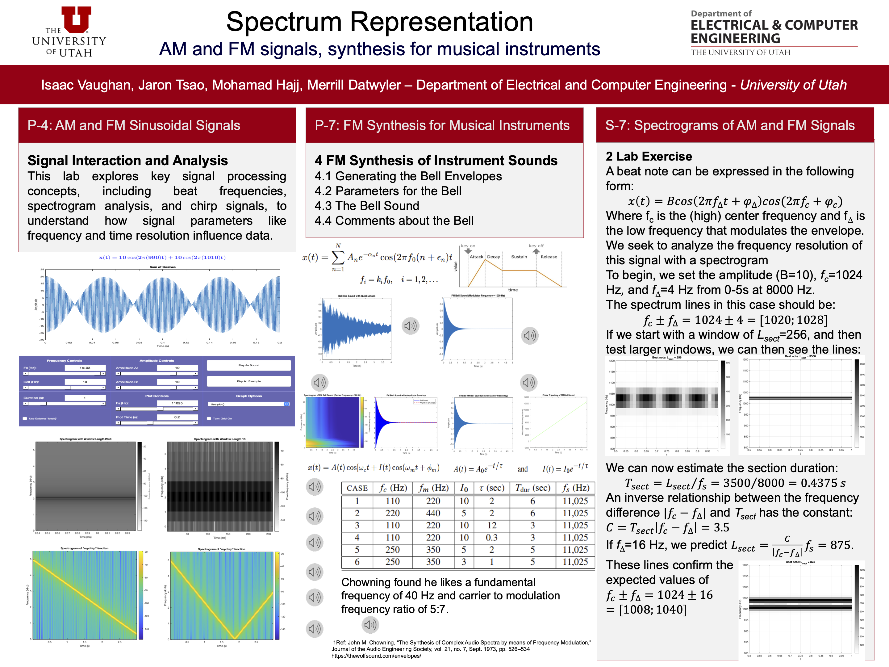
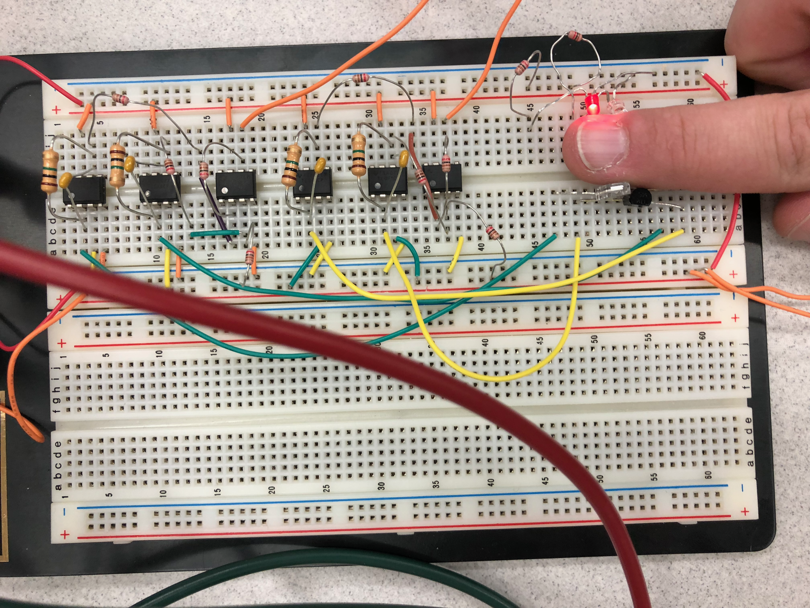
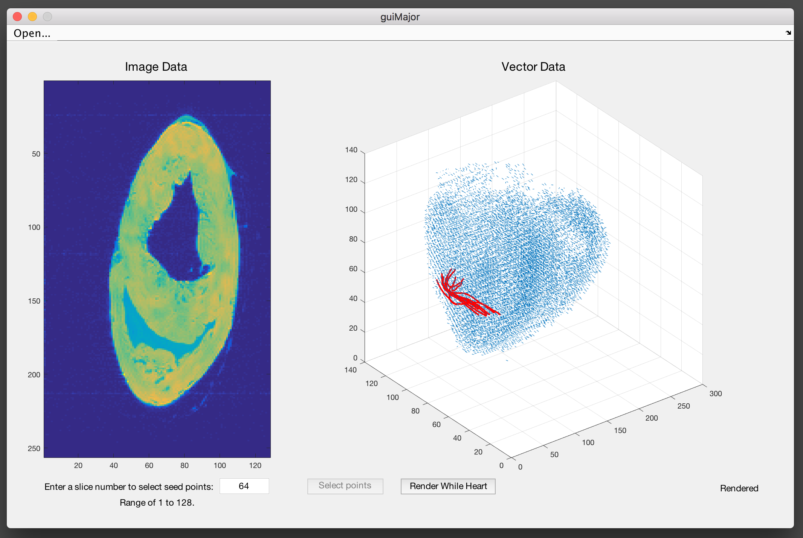
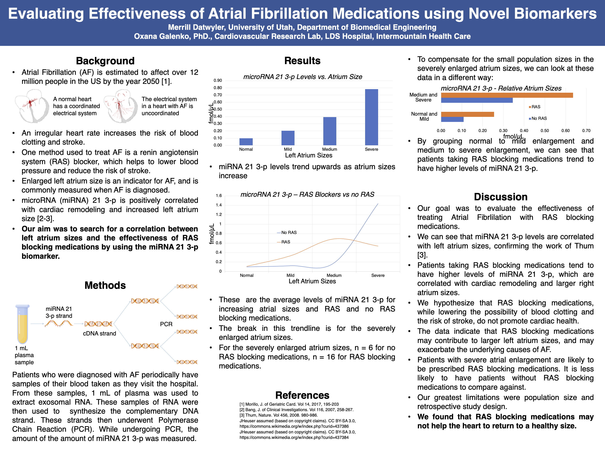

Projects
Graduate
Spectrum representation of beat signals

Turbid water imaging using CycleGAN machine learning
Undergraduate
Breadboard pulse oximeter with LabView data analysis

MRI visualization of cardiac tissue with MATLAB

Home balance and posturography device with Arduino

Extracted microRNA biomarkers from plasma samples; statistical analysis linking biomarkers to atrial fibrillation
